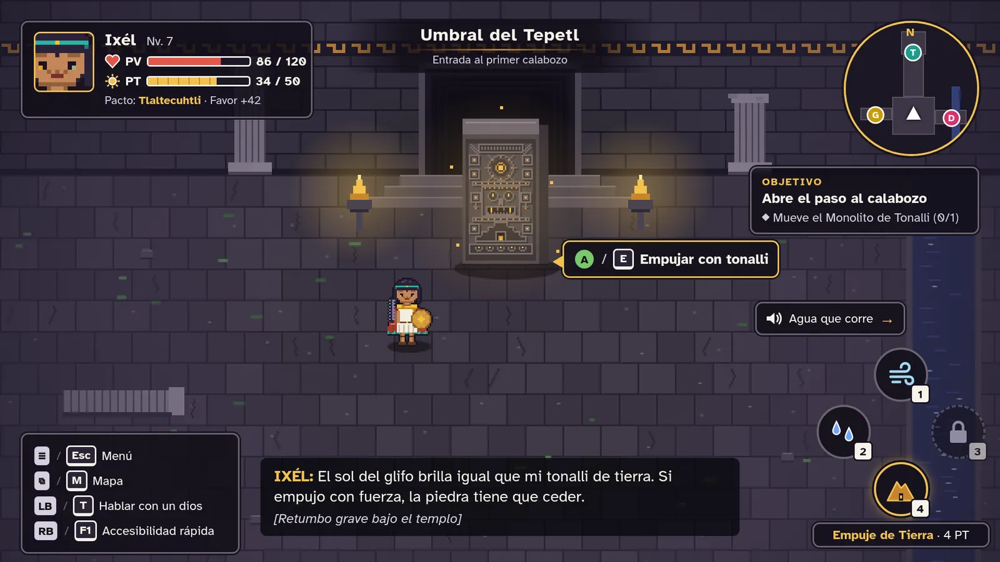
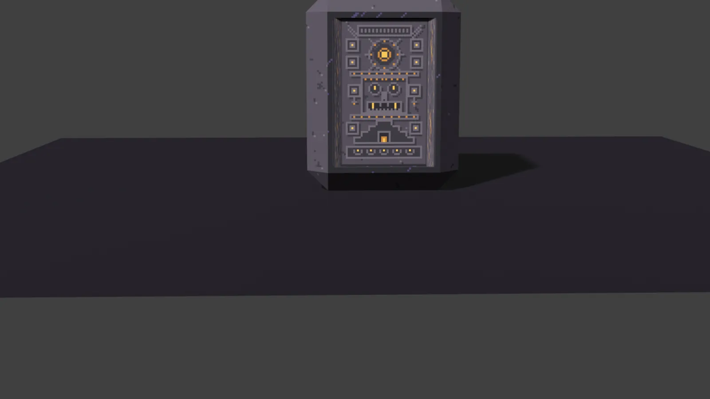

Hola, soy Esaú.
Programo web, apps y videojuegos desde Culiacán, Sinaloa.
Cuatro oficios, un mismo código
- Web full stack
- Angular, Astro y Laravel, del formulario a la base de datos.
- Apps móviles
- Kotlin en Android, Swift y UIKit en iOS.
- Agentes de IA
- Integro agentes de inteligencia artificial en productos web.
- Videojuegos
- Diseño, modelado low-poly y sonido para prototipos.
Sol de Obsidiana, un JRPG mexica
Diseñé el mundo, el monolito, la interfaz y la música del primer puzzle.


Lo que he construido
| Proyecto | Qué es | Herramientas |
|---|---|---|
| Sol de Obsidiana | Diseño de un JRPG y prototipo visual y sonoro | Blender, Krita, LMMS |
| Landing pages locales | Sitios para negocios de Culiacán | Astro, Tailwind |
| ComidasMX | Catálogo de restaurantes y platillos | Kotlin, SQLite |
| ¿Qué personaje eres? | Cuestionario de personalidad para iPhone | Swift, UIKit |
| CRUD de productos | Inventario con búsqueda, filtros y paginación | Laravel, MariaDB |
| Cinema UVEG | Cartelera de películas con su ficha de detalle | Angular |
Desde Culiacán, en línea
- Ciudad
- Culiacán, Sinaloa
- Carrera
- Ingeniería en Desarrollo de Software, UVEG
- Estadía
- Web full stack e IA, octubre 2026 a mayo 2027